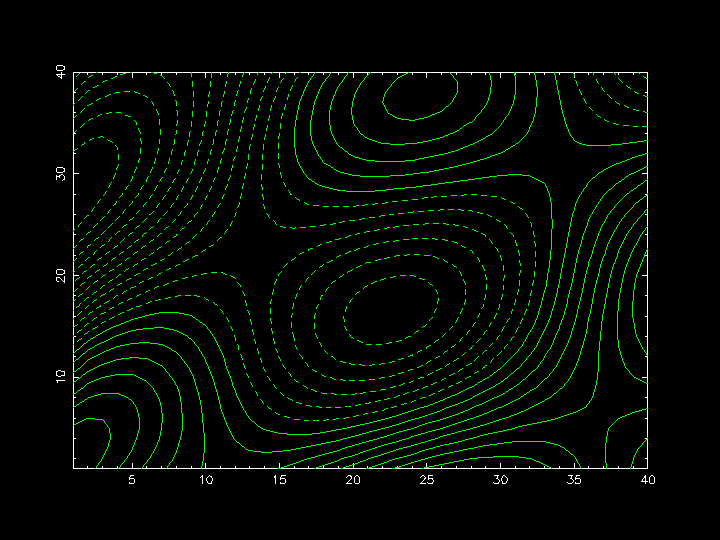

require "narray"
require "pgplot"
include Pgplot
# Preparing data
x = NArray.sfloat(40,1).indgen!(1)
y = NArray.sfloat(1,40).indgen!(1)
map = NMath.cos( NMath.sqrt(x*2)*0.3 - y*0.4/3 ) * NMath.cos( x*0.4/3 ) \
+ (x-y)/40
n = 21
level = NArray.sfloat(n).indgen! * (map.max-map.min)/n + map.min
# Draw contour map
pgopen
pgenv(1,40,1,40) # set "Plotter Environment" and draw box.
pgsci(3) # set Color Index to Green.
pgcont map, level
